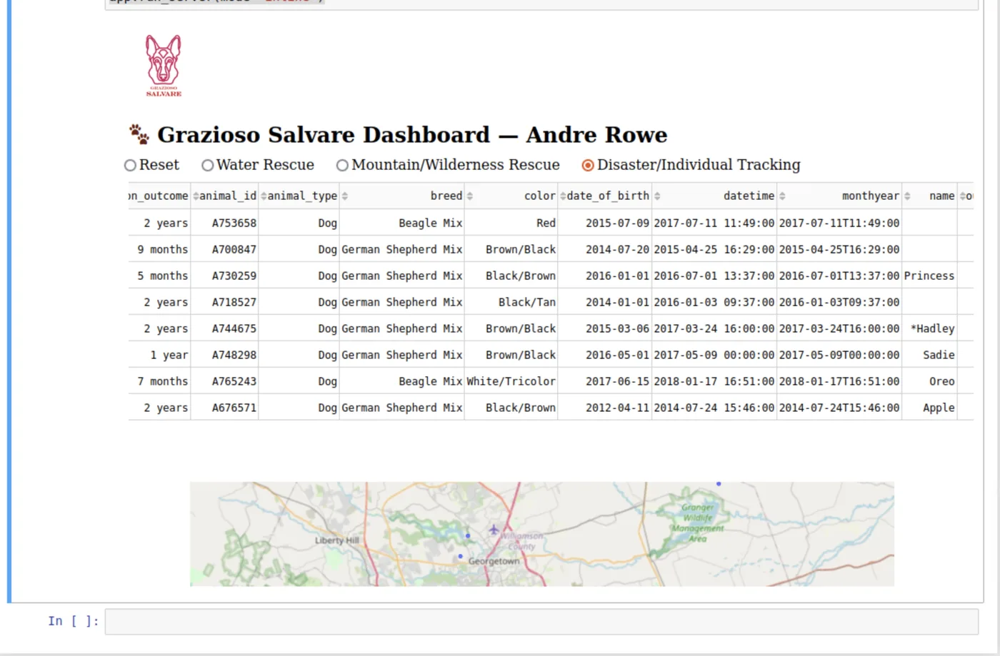
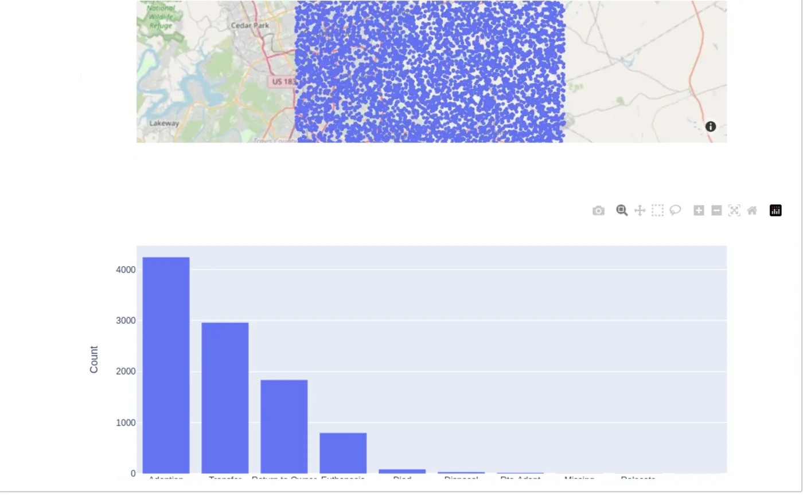

case study — academic project
Grazioso Animal Rescue
Rescue-operations dashboard · SNHU CS-340
A rescue-animal organization needed field data it could act on in real time. I built the CRUD backend and the dashboard that surface it.
- Role
- Backend Developer & Data Engineer
- Stack
- Python · MongoDB · PyMongo · Dash · Plotly · Pandas
- Missions
- Water · Mountain · Disaster
the problem
Grazioso Salvare — the course's fictional client — trains animals for emergency operations. The challenge wasn't collecting data; it was making it actionable in real time. Field staff needed to filter animals by rescue readiness, see deployment areas, and make data-backed calls fast, without hand-sifting a raw database.
what i built
MongoDB data layer
- Schema and indexes designed for fast filtering by mission profile
- Indexed queries for responsive field retrieval across the dataset
- Structured to scale to the full shelter dataset without redesign
Python CRUD module
- A reusable PyMongo module wrapping all create / read / update / delete operations
- Input validation and explicit error handling — no bad writes, no silent failures
- Consumed by a Dash dashboard used as a clean data surface, not decoration


results
A typical field query — water-rescue-suitable dogs under two years old ({"age": {"$lt": 2}, "mission": "water"}) — resolves to a filtered dashboard view with the map and charts updating together. Built against the course's Austin Animal Center dataset.
engineering notes
- Resolved MongoDB
ObjectIdserialization for clean backend-to-frontend data transfer - Kept Dash lean — used purely as a data surface over the CRUD layer
- Credentials isolated in a
.envfile, kept out of version control